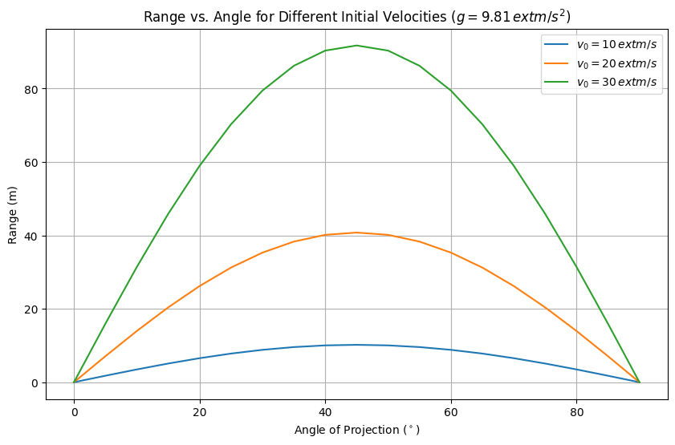
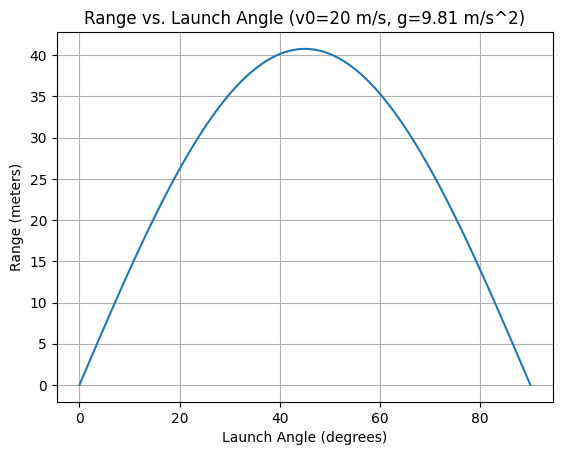
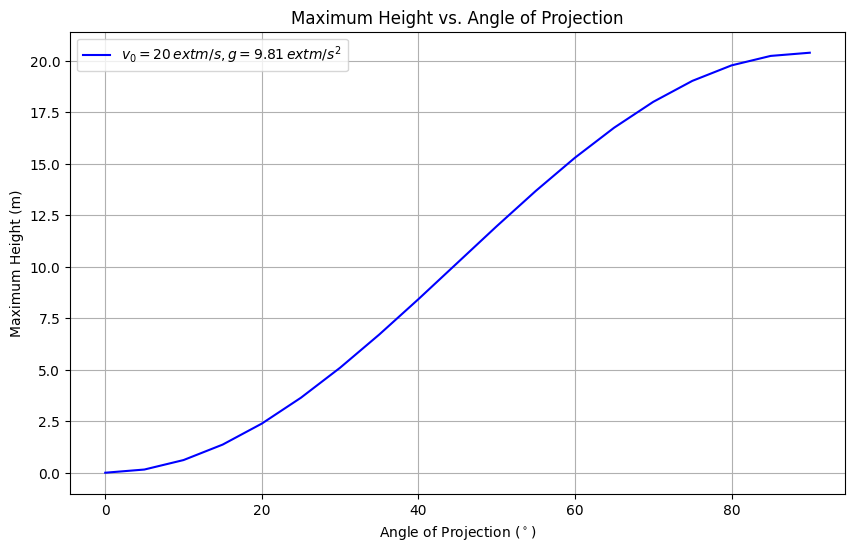

Theoretical Foundation of Projectile Motion
Introduction
Projectile motion is a fundamental concept in classical mechanics, governed by Newton’s laws under the influence of gravity. This section establishes the theoretical framework by deriving the equations of motion from first principles, decomposing initial conditions, and solving the resulting differential equations. We assume an idealized scenario with no air resistance and constant gravitational acceleration, providing a baseline for analyzing the range as a function of the angle of projection.
Newton’s Second Law Applied to Projectile Motion
Newton’s second law, \(\vec{F} = m\vec{a}\), describes the motion of a projectile under gravity. For a projectile of mass \(m\), the only force acting is gravity, directed vertically downward. We define a Cartesian coordinate system where \(x\) is horizontal (positive to the right) and \(y\) is vertical (positive upward). The gravitational force is:
where \(g\) is the gravitational acceleration (\(g \approx 9.81 \, \text{m/s}^2\)) and \(\hat{j}\) is the unit vector in the \(y\)-direction. Since no forces act horizontally (in the absence of air resistance), the net force components are:
Applying Newton’s second law in each direction:
Simplifying by dividing through by \(m\) (assuming \(m \neq 0\)):
These second-order differential equations govern the projectile’s motion in two dimensions.
Decomposition of Initial Velocity
The projectile is launched with an initial speed \(v_0\) at an angle \(\theta\) to the horizontal. Using trigonometry, the initial velocity vector \(\vec{v}_0\) is resolved into horizontal and vertical components:
At \(t = 0\), assuming the launch point is at the origin \((x_0, y_0) = (0, 0)\), the initial conditions are:
These components dictate the projectile’s trajectory, with \(v_{0x}\) driving horizontal motion and \(v_{0y}\) opposing gravity in the vertical direction.
Differential Equations of Motion
The equations \(\frac{d^2 x}{dt^2} = 0\) and \(\frac{d^2 y}{dt^2} = -g\) are solved independently due to the decoupling of horizontal and vertical motion.
Horizontal Motion
For the \(x\)-direction:
Integrate with respect to time:
where \(C_1\) is a constant. Using the initial condition \(\frac{dx}{dt}(0) = v_0 \cos\theta\):
Integrate again:
With \(x(0) = 0\):
Thus:
Vertical Motion
For the \(y\)-direction:
Integrate:
Using \(\frac{dy}{dt}(0) = v_0 \sin\theta\):
So:
Integrate again:
With \(y(0) = 0\):
Thus:
General Solution
The position of the projectile as a function of time is:
This parametric form describes a parabolic trajectory, with \(x(t)\) linear and \(y(t)\) quadratic in time.
Key Variables and Parametric Dependence
The equations depend on several parameters: - Initial velocity (\(v_0\)): Scales both \(x(t)\) and \(y(t)\) linearly, increasing the range and height. - Angle of projection (\(\theta\)): Modulates the balance between horizontal and vertical components via \(\cos\theta\) and \(\sin\theta\). - Gravitational acceleration (\(g\)): Affects only the vertical motion, steepening the parabola as \(g\) increases. - Initial height (\(h\)): If \(y(0) = h \neq 0\), the vertical equation becomes:
Sensitivity Analysis
- Increasing \(v_0\) amplifies the range and maximum height proportionally to \(v_0^2\) (as derived later for range).
- Varying \(\theta\) shifts energy between horizontal and vertical motion, with \(\theta = 45^\circ\) often maximizing range (to be verified).
- Larger \(g\) reduces flight time and range, compressing the trajectory.
- Non-zero \(h\) extends flight time and alters the range, requiring a modified time-of-flight calculation.
Analysis of the Range in Projectile Motion
Introduction
The horizontal range of a projectile—the distance traveled along the ground before landing—is a key metric in understanding how launch parameters influence its trajectory. This section derives the range formula for a projectile launched from ground level, explores its dependence on the angle of projection, and examines the effects of varying initial velocity and gravitational acceleration. We aim to predict range behavior across a spectrum of angles and hypothesize the optimal angle for maximum range.
Derivation of the Range Formula
For a projectile launched from ground level (\(y_0 = 0\)), the range \(R\) is the horizontal distance \(x(t)\) when the projectile returns to \(y = 0\). From the theoretical foundation, the position equations are:
where \(v_0\) is the initial velocity, \(\theta\) is the angle of projection, \(g\) is gravitational acceleration, and \(t\) is time.
Time of Flight
The projectile lands when \(y(t) = 0\). Set the vertical position to zero:
Factorize:
This yields two solutions: - \(t = 0\) (launch time), - \(v_0 \sin\theta - \frac{1}{2} g t = 0\).
Solve the second:
This \(t = \frac{2 v_0 \sin\theta}{g}\) is the time of flight, \(T\), when the projectile returns to ground level.
Horizontal Range
Substitute \(T\) into the horizontal position equation:
Simplify using the trigonometric identity \(2 \sin\theta \cos\theta = \sin 2\theta\):
Thus, the range formula is:
This equation expresses \(R\) as a function of \(\theta\), \(v_0\), and \(g\), valid for a projectile launched and landing at the same height.
Testing Projection Angles
To explore how \(R\) varies with \(\theta\), consider angles from \(0^\circ\) to \(90^\circ\): - At \(\theta = 0^\circ\): \(\sin 2\theta = \sin 0^\circ = 0\), so \(R = 0\) (no horizontal motion). - At \(\theta = 30^\circ\): \(\sin 2\theta = \sin 60^\circ = \frac{\sqrt{3}}{2}\), so \(R = \frac{v_0^2 \cdot \frac{\sqrt{3}}{2}}{g}\). - At \(\theta = 45^\circ\): \(\sin 2\theta = \sin 90^\circ = 1\), so \(R = \frac{v_0^2}{g}\) (potential maximum). - At \(\theta = 60^\circ\): \(\sin 2\theta = \sin 120^\circ = \frac{\sqrt{3}}{2}\), so \(R = \frac{v_0^2 \cdot \frac{\sqrt{3}}{2}}{g}\) (same as \(30^\circ\)). - At \(\theta = 90^\circ\): \(\sin 2\theta = \sin 180^\circ = 0\), so \(R = 0\) (straight up).
The symmetry around \(45^\circ\) (e.g., \(30^\circ\) and \(60^\circ\) yield equal ranges) suggests a parabolic dependence of \(R\) on \(\theta\), peaking at \(\sin 2\theta = 1\). A planned test of angles in increments (e.g., \(0^\circ, 15^\circ, 30^\circ, 45^\circ, 60^\circ, 75^\circ, 90^\circ\)) will confirm this trend.
Influence of Other Parameters
The range depends on \(v_0\) and \(g\) alongside \(\theta\). Analyze their effects: - Initial Velocity (\(v_0\)): \(R \propto v_0^2\). Doubling \(v_0\) quadruples \(R\), as kinetic energy scales with \(v_0^2\), extending both flight time and horizontal reach. - Gravitational Acceleration (\(g\)): \(R \propto \frac{1}{g}\). Increasing \(g\) reduces \(R\) by shortening the flight time, \(T = \frac{2 v_0 \sin\theta}{g}\), compressing the trajectory.
Parametric Shifts
- Increasing \(v_0\) stretches the range curve upward, maintaining the peak at \(\theta = 45^\circ\).
- Increasing \(g\) flattens the curve, reducing all ranges proportionally without altering the optimal angle.
- Combining changes (e.g., higher \(v_0\), lower \(g\)) amplifies \(R\) dramatically, useful for applications like artillery.
Hypothesis for Maximum Range
The term \(\sin 2\theta\) in \(R = \frac{v_0^2 \sin 2\theta}{g}\) reaches its maximum of 1 when \(2\theta = 90^\circ\), or \(\theta = 45^\circ\). Thus, hypothesize that \(\theta = 45^\circ\) maximizes \(R\). Physically, this balances horizontal velocity (\(v_0 \cos\theta\)) and flight time (proportional to \(v_0 \sin\theta\)): - At \(\theta < 45^\circ\), higher \(v_{0x}\) is offset by shorter \(T\). - At \(\theta > 45^\circ\), longer \(T\) is offset by lower \(v_{0x}\).
To test, compute the derivative of \(R\) with respect to \(\theta\):
Set \(\frac{dR}{d\theta} = 0\):
The second derivative, \(\frac{d^2 R}{d\theta^2} = \frac{v_0^2}{g} \cdot (-4 \sin 2\theta)\), is negative at \(\theta = 45^\circ\) (\(\sin 90^\circ = 1\)), confirming a maximum. This supports the hypothesis that \(45^\circ\) optimizes range due to the interplay of horizontal and vertical motion components.
Practical Applications of Projectile Motion
Introduction
Projectile motion extends beyond theoretical models to describe a variety of real-world phenomena, from sports to military applications and space exploration. This section identifies practical examples, considers modifications to the idealized model for complex scenarios like uneven terrain and air resistance, and proposes analytical adaptations. The goal is to bridge the gap between the simplified equations and their application in diverse physical contexts.
Real-World Examples
Projectile motion governs numerous scenarios: - Basketball Shot: A player launches the ball with initial velocity \(v_0\) at angle \(\theta\) toward a hoop. The arc must clear defenders and reach the target height, typically 3.05 m above the ground. - Cannonball: Historical artillery relies on maximizing range \(R = \frac{v_0^2 \sin 2\theta}{g}\) by adjusting \(\theta\), often near 45°, to strike distant targets. - Spacecraft Launch: Initial ascent approximates projectile motion under gravity, though thrust and atmospheric effects dominate later phases. - Additional examples include golf balls, javelin throws, and water jets from a hose, each with unique initial conditions and environmental factors.
These cases highlight the versatility of the model \(x(t) = v_0 \cos\theta \cdot t\), \(y(t) = v_0 \sin\theta \cdot t - \frac{1}{2} g t^2\), but real conditions necessitate adjustments.
Adjustments for Uneven Terrain
In the idealized model, launch and landing occur at \(y = 0\). Uneven terrain introduces a height difference \(h\) between launch (\(y_0 = 0\)) and landing (\(y = h\)). The vertical position becomes:
Landing occurs when \(y(t) = h\):
Rearrange into a quadratic equation in \(t\):
Solve using the quadratic formula \(t = \frac{-b \pm \sqrt{b^2 - 4ac}}{2a}\), where \(a = \frac{1}{2} g\), \(b = -v_0 \sin\theta\), \(c = h\):
The positive root (assuming upward motion) gives the time of flight \(T\). The range is then:
Implications
- For \(h > 0\) (landing above launch), \(T\) increases, potentially extending \(R\) beyond the flat-ground case.
- For \(h < 0\) (landing below), \(R\) increases further due to prolonged flight time.
- The optimal angle shifts from 45°, requiring numerical or analytical optimization.
Introducing Air Resistance
Air resistance introduces a drag force, typically modeled as \(F_d = -k v\) (linear) or \(F_d = -k v^2\) (quadratic), where \(k\) is a drag coefficient and \(v\) is velocity. For simplicity, consider the quadratic form, proportional to speed squared:
With components \(v_x = \frac{dx}{dt}\), \(v_y = \frac{dy}{dt}\), and \(|\vec{v}| = \sqrt{v_x^2 + v_y^2}\), the equations of motion become:
Dividing by \(m\):
Qualitative Effects
- Range Reduction: Drag opposes motion, reducing \(v_x\) and \(v_y\), shortening \(T\) and \(R\) compared to \(R = \frac{v_0^2 \sin 2\theta}{g}\).
- Trajectory Asymmetry: The peak height decreases, and the descent steepens, unlike the symmetric parabola of the ideal case.
- Angle Adjustment: The optimal \(\theta\) for maximum range decreases below 45°, as vertical motion is more penalized by drag.
These differential equations lack a simple analytical solution, suggesting numerical methods (e.g., Euler or Runge-Kutta) for simulation.
Adaptation Strategies
To apply the model to real-world scenarios: - Basketball Shot: - Adjust for hoop height: Set \(y(t) = h_{\text{hoop}}\) and solve for \(t\) and \(x\). - Include light drag (\(k\) small) and optimize \(\theta\) for accuracy, not just range. - Cannonball: - Account for uneven terrain using the modified \(R\) equation. - Incorporate drag via numerical integration, adjusting \(v_0\) and \(\theta\) for target distance. - Spacecraft Launch: - Model initial phase with \(g\) decreasing with altitude (\(g = \frac{GM}{(R+h)^2}\)). - Add thrust as an external force, modifying \(\frac{d^2 y}{dt^2} = -g + \frac{F_{\text{thrust}}}{m}\).
General Ideas
- Initial Conditions: Vary \(v_0\), \(\theta\), or \(h\) to match specific contexts (e.g., higher \(v_0\) for cannonballs).
- External Forces: Add terms to the equations (e.g., \(-k v^2\) for drag, wind forces \(F_w\)).
- Numerical Tools: Use Python to simulate complex cases, plotting adjusted trajectories and ranges.
Codes and Plots

import numpy as np
import matplotlib.pyplot as plt
# Constants
g = 9.81 # gravitational acceleration (m/s^2)
angles_deg = np.arange(0, 91, 5) # angles from 0° to 90° in 5° increments
angles_rad = np.deg2rad(angles_deg) # convert to radians
v0_values = [10, 20, 30] # initial velocities (m/s)
# Calculate range for each v0
plt.figure(figsize=(10, 6))
for v0 in v0_values:
R = (v0**2 * np.sin(2 * angles_rad)) / g
plt.plot(angles_deg, R, label=f'$v_0 = {v0} \, \text{{m/s}}$')
# Plot settings
plt.xlabel('Angle of Projection ($^\circ$)')
plt.ylabel('Range (m)')
plt.title('Range vs. Angle for Different Initial Velocities ($g = 9.81 \, \text{m/s}^2$)')
plt.legend()
plt.grid(True)
plt.savefig('range_vs_angle_v0.png') # Save for Markdown embedding
plt.show()

import numpy as np
import matplotlib.pyplot as plt
# Constants
v0 = 20 # Initial velocity in m/s (you can change this value)
g = 9.81 # Gravitational acceleration in m/s² (Earth's gravity)
# Angle values in degrees (0 to 90 degrees)
angles_deg = np.linspace(0, 90, 500) # 500 points between 0 and 90
angles_rad = np.radians(angles_deg) # Convert degrees to radians
# Calculate the range for each angle
ranges = (v0**2) * np.sin(2 * angles_rad) / g
# Plotting the range vs. angle
plt.figure(figsize=(10, 6))
plt.plot(angles_deg, ranges, label=f'v₀ = {v0} m/s')
plt.axvline(45, color='red', linestyle='--', label='Max Range at 45°')
plt.title("Projectile Range vs. Angle of Projection")
plt.xlabel("Angle (degrees)")
plt.ylabel("Range (meters)")
plt.grid(True)
plt.legend()
plt.show()

import numpy as np
import matplotlib.pyplot as plt
# Constants
v0 = 20 # initial velocity (m/s)
g = 9.81 # gravitational acceleration (m/s^2)
angles_deg = np.arange(0, 91, 5) # angles from 0° to 90° in 5° increments
angles_rad = np.deg2rad(angles_deg)
# Calculate maximum height
H = (v0**2 * np.sin(angles_rad)**2) / (2 * g) # H = (v0*sinθ)^2 / (2g)
# Plot
plt.figure(figsize=(10, 6))
plt.plot(angles_deg, H, 'b-', label=f'$v_0 = {v0} \, \text{{m/s}}, g = {g} \, \text{{m/s}}^2$')
plt.xlabel('Angle of Projection ($^\circ$)')
plt.ylabel('Maximum Height (m)')
plt.title('Maximum Height vs. Angle of Projection')
plt.legend()
plt.grid(True)
plt.savefig('height_vs_angle.png') # Save for Markdown embedding
plt.show()
Conclusion
This exploration of projectile motion illuminates the profound connection between fundamental physics and its manifestation in both idealized and real-world systems. The derivation of the trajectory equations, \(x(t) = v_0 \cos\theta \cdot t\) and \(y(t) = v_0 \sin\theta \cdot t - \frac{1}{2} g t^2\), from Newton’s laws provided a robust theoretical scaffold, culminating in the range expression \(R = \frac{v_0^2 \sin 2\theta}{g}\). Analysis confirmed that \(\theta = 45^\circ\) maximizes \(R\) on level ground, a result borne out by the trigonometric peak of \(\sin 2\theta\) and validated through computational plots, which also revealed the quadratic scaling with \(v_0\) and inverse dependence on \(g\). These findings encapsulate the elegance of projectile motion as a balance of horizontal persistence and vertical dynamics.
Translating this model to practical contexts—such as a cannonball’s flight or a spacecraft’s ascent—exposed its adaptability and limitations. Adjusting for uneven terrain, where \(y(t) = h\) at landing yields a modified time of flight \(t = \frac{v_0 \sin\theta + \sqrt{(v_0 \sin\theta)^2 - 2gh}}{g}\), alters the range and optimal angle, challenging the simplicity of the 45° rule. Air resistance, modeled as \(F_d = -k v^2\), further complicates the picture, dampening \(R\) and skewing trajectories, necessitating numerical approaches over analytical solutions. Simulations enriched this narrative, offering visual clarity on how parameters like \(v_0\) and \(g\) reshape the motion, from extended ranges to truncated heights.
Ultimately, this investigation underscores projectile motion as a versatile framework, bridging abstract mathematics with tangible phenomena. It reveals a tension between the purity of theory and the messiness of reality, prompting a deeper appreciation for the iterative refinement of models. Future inquiries might leverage experimental validation or sophisticated drag models to enhance precision, ensuring that this classical system remains a vital lens for understanding motion across scientific and engineering domains.